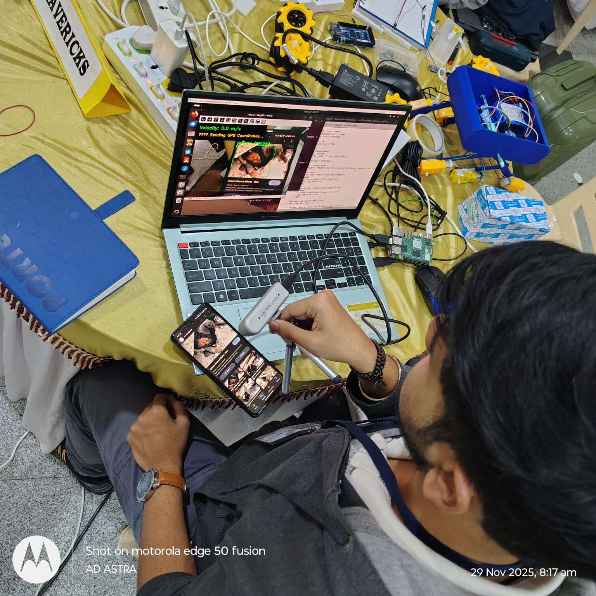
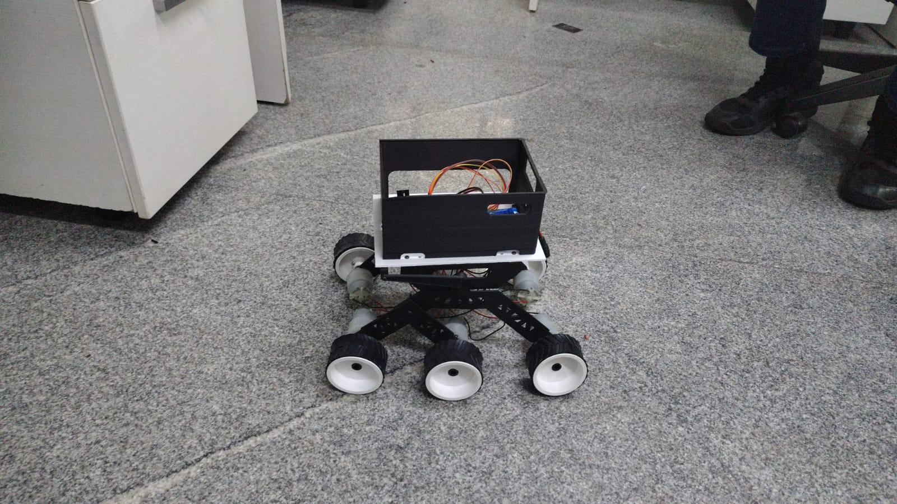
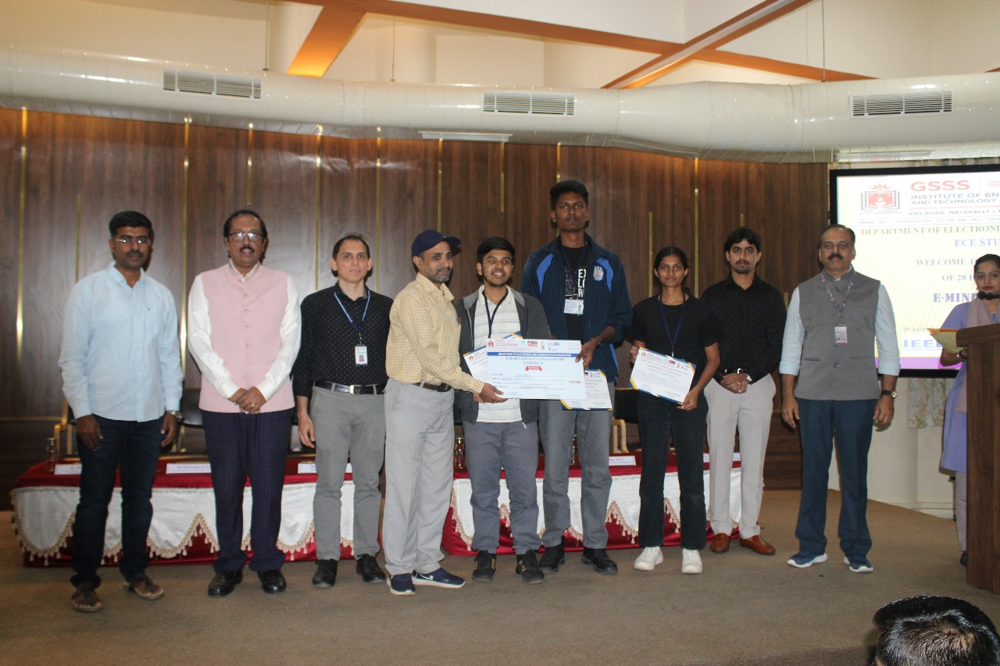
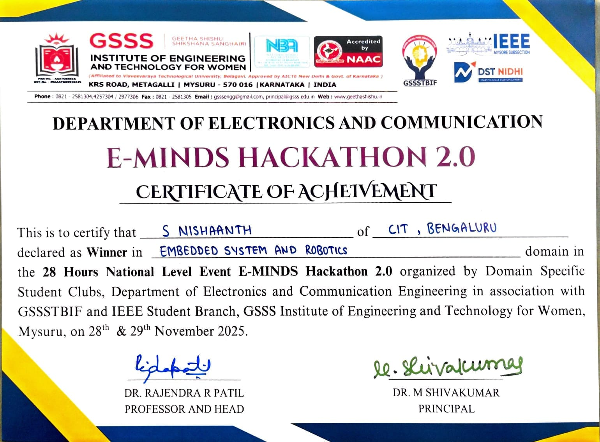
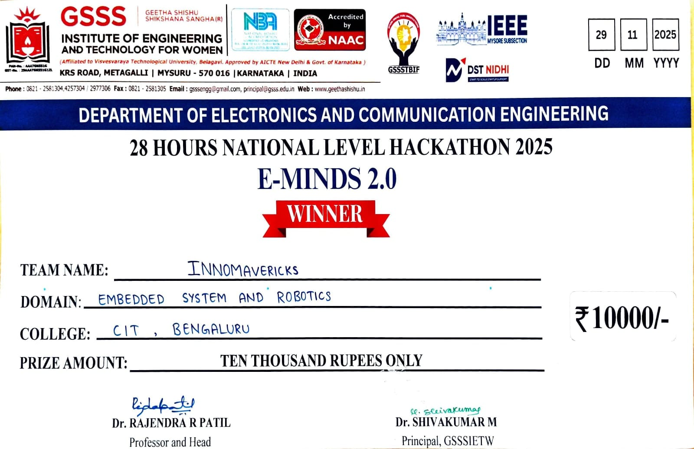

LIFELANCER ROVER
A multi-terrain disaster-response rover designed to extend its reach using an aerial companion.
BUILT FOR THE GROUND.
LifeLancer explores how a ground robot can operate in environments where terrain, obstacles and human access make conventional intervention difficult.
The concept combines a rocker-bogie rover with onboard perception, environmental sensing and an aerial companion to extend the operational reach of the system.
WHEN THE ROVER STOPS.
A rover can traverse difficult terrain, but every ground platform eventually encounters an area that it cannot physically enter.
LifeLancer approaches this limitation by pairing ground mobility with an aerial companion, allowing the system to extend its reach beyond the physical limits of the rover.
ONE SYSTEM. MULTIPLE LAYERS.
Raspberry Pi 5 acts as the central computing hub, while ESP32-based electronics handle rover-level communication and control.
The architecture allows perception, sensing, communication and mobility subsystems to operate together as a single robotic platform.
Intel RealSense depth sensing and human detection.
Raspberry Pi 5 running the higher-level robotic stack.
ESP32-based communication and rover-level control.
Wireless communication with LoRa considered for longer-range operation.

SEEING THE ENVIRONMENT.
The perception layer uses depth information and onboard computing to understand the environment around the rover.
Human detection and obstacle awareness form part of the system's intended capabilities, allowing the rover to move from simple remote control toward intelligent operation.

BUILDING THE ROVER.
The physical platform is built around a multi-terrain rover concept with electronics distributed across the chassis.
My work focused on hardware integration, ESP32 and Raspberry Pi communication, sensor integration and environmental data acquisition.
AUTONOMOUS
NAVIGATION
HUMAN
DETECTION
OBSTACLE
AVOIDANCE
ENVIRONMENTAL
SENSING
LIVE
VIDEO
MAPPING /
REMOTE OPERATION
HARDWARE INTEGRATION.
My contribution focused on bringing the individual hardware and software components together into a working robotic system.
- Hardware integration
- ESP32 and Raspberry Pi communication
- Sensor integration
- Environmental data acquisition
- System-level testing
1ST PLACE EMBEDDED SYSTEMS & ROBOTICS.
LifeLancer was presented at GSSSIETW E-MINDS 2.0, where the project secured first place in the Embedded Systems & Robotics track.


PROVEN IN COMPETITION.
The project was recognised with a first-place result and a ₹10,000 award in the Embedded Systems & Robotics category.
